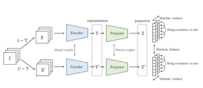

|
Sampras Dsouza Hi I am Sampras. Currently, I am MSCS Student at NYU courant school of Mathematicats. Previously, I have worked as a Software Enginer 2 (4+ Years of Experience) at Cimpress India. I graduated from Dwarkadas J. Sanghvi College of Engineering with a major in Information Technology with (9.47/10 CGPA). and worked as a research intern under prof. Jatin Batra. Google Scholar / Email / CV / Github / Linkedin |
{kind=link}
ResearchMy research interest broadly lies in Computer Vision, Machine Learning and Cognitive Science. |
News
|
Projects |
|

|
Self-Supervised Learning Using VICReg
|

|
Eyeris
Computer Vision, Raspberry Pi, Node.js, React.js, HTML
|
Publications |

|
Navigation using Object Detection and Depth Sensing for Blind People
Sampras M. Dsouza, Smit Malkan, Soumyaprakash Dasmohapatra, Manav jain, Abhijit Joshi, IEEE GUCON 2021, 2024 SSS on Clinical FMs / IEEE / The main aim of our project is to develop a system that assists a visually impaired person in all ways possible. Existing aids consist mainly of guard dogs which are very costly to purchase and canes that are not feasible to be used in all possible conditions(Eg: Outdoor Navigation). We make use of the computing power of the raspberry pi to develop a portable system that assists a visually impaired person in all possible situations. Our system is implemented on a Raspberry Pi 3 model having a single Pi camera unit. The system consists of three main modules, first is the navigation module that is equipped with a depth-sensing technique that can be used by the user for outdoor navigation. Second, is the face and object detection module that can be used by the user to recognize various objects and faces in front of him. Third, is the text recognition facility can be used by the user to read the text. All the communication between the system and the user takes place with the help of the microphone that is connected to the 3.5mm audio port of the raspberry pi. |
Selected Awards and Honors06-2024: I received the NPTEL Distributed System Certification with 80% . |
ServiceReviewer: TNNLS |